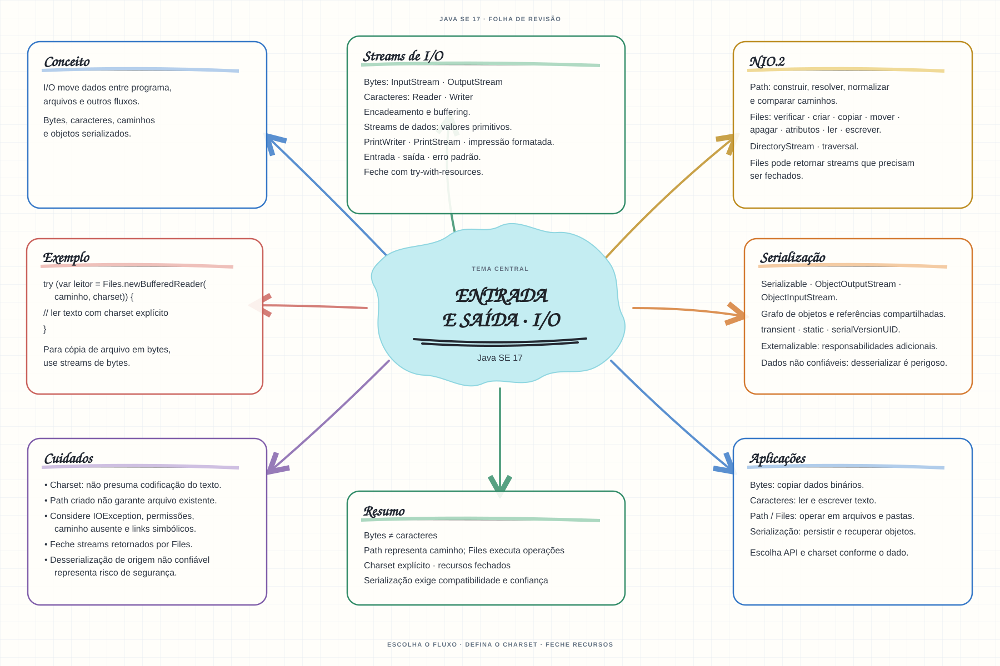

Escolha um assunto para abrir as notas de estudo. Os mapas mentais complementam o conteúdo como material de revisão.


Abrir mapa mental do capítuloMARCO DE CONCLUSÃO
Grave e leia um arquivo de texto com charset explícito e fechamento automático dos recursos.
Como este capítulo se relaciona com cada exame
1Z0-808 · Java 8
Fundamentos reaproveitáveis; valide APIs e objetivos específicos de Java 8.
1Z0-829 · Java 17
Base de estudo deste portal; confirme o mapeamento com o blueprint vigente.
1Z0-830 · Java 21
Conceitos úteis; confira APIs e requisitos atualizados de Java 21.
Orientação editorial sobre reaproveitamento do material; não representa objetivos oficiais nem garante cobertura do exame. Consulte o comparativo e as fontes da Oracle.